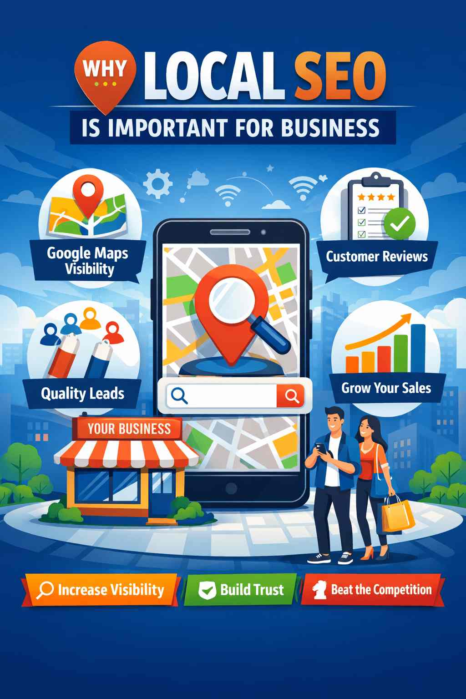

If you run a business, whether it’s a service firm, retail store, clinic, hotel, or consultancy your customers are already searching for your services online. The real question is simple: do they find your business, or do they find your competitor first?
This is where Local SEO becomes essential. Unlike general SEO, local SEO focuses on helping businesses appear in location based searches, especially when people are ready to take action such as calling, visiting, or booking a service.
In today’s competitive digital environment, local SEO is no longer optional. It’s a necessity for sustainable growth.
What Is Local SEO (In Simple Terms)?
Local SEO is the process of optimizing your online presence so your business appears when people search for services near them.
For example:
- SEO services in Thrissur
- Best interior designer near me
- Digital marketing agency in Kochi
These searches usually display:
- Google Maps results
- Local business listings
- Nearby service providers
If your business isn’t optimized for local search, you’re simply invisible to high-intent customers who are actively looking for what you offer.
Why Local SEO Matters in Today’s Market
Consumer behavior has changed. People now rely heavily on mobile searches, Google Maps, and online reviews to make decisions. Local SEO helps businesses align with how people actually search today.
1. Customers Search Locally Before Making Decisions
Most users no longer search in broad terms. Instead, they search with clear location intent.
A business owner isn’t searching for “Digital marketing services.” They’re searching for “Digital marketing services in Kochi.”
If your website and business profile aren’t locally optimized, Google won’t show you no matter how good your service is.
- Where your business operates
- Who your services are meant for
- When your business should appear in local results
2. Google Maps Brings High-Intent Leads
One of the biggest advantages of local SEO is visibility on Google Maps.
- Users can call instantly
- Get directions
- Visit your website
- Read reviews
These users are not just browsing they’re ready to take action. Businesses that work with an experienced SEO expert in Kerala often see better quality leads from map results.
3. Local SEO Builds Trust and Credibility
Before choosing a service, people usually check reviews, ratings, business photos, and online presence.
Local SEO helps businesses collect genuine reviews, maintain consistent information, and appear professional. Repeated visibility builds trust even before the first interaction.
4. Small Businesses Can Compete With Bigger Brands
A common misconception is that only big companies can rank on Google. Local SEO proves otherwise.
Search engines prioritize relevance, proximity, and accuracy not company size. This allows smaller businesses to compete effectively in local search results.
5. Local SEO Attracts High-Quality Traffic
Local SEO doesn’t just increase traffic, it improves traffic quality.
- Visitors from your service area
- Users actively searching for your services
- Higher conversion potential
This results in better leads, more inquiries, and higher ROI compared to paid advertising.
6. Mobile Searches Make Local SEO Even More Critical
Most local searches happen on smartphones. Searches like “near me” or “open now” happen in real time.
Local SEO ensures your business is mobile-friendly, easy to contact, and visible at the exact moment customers are ready to act.
Common Local SEO Mistakes Businesses Make
- Incomplete Google Business Profile
- Incorrect name, address, or phone number
- Ignoring customer reviews
- No location-specific website content
- Using generic keywords instead of local ones
Fixing these issues alone can significantly improve local visibility.
How Local SEO Supports Long-Term Growth
Local SEO is not a one-time task. With consistent optimization, visibility improves, brand recognition grows, and marketing costs reduce over time.
Businesses that partner with a professional SEO consultant often see steady, sustainable growth without relying heavily on paid ads.
Final Thoughts
Local SEO is one of the most cost-effective digital strategies for businesses that depend on nearby customers. It helps you get discovered, build trust, compete locally, and generate consistent, high quality leads.
If local customers matter to your business, investing in local SEO isn’t just smart,it’s essential.